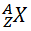
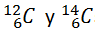
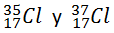

ELEMENTO QUÍMICO
Un elemento químico es aquella sustancia que no puede descomponerse en otras por medios químicos.
Los elementos se representan mediante un símbolo que consiste en una letra mayúscula (suele ser, la primera letra de su nombre latino) a la que en ocasiones, y para evitar equívocos, se le añade una segunda letra minúscula.
Los elementos químicos están caracterizados por su número atómico (Z, número de protones) y su número másico (A, número de protones y neutrones):

Dos átomos pertenecen al mismo elemento cuando tienen el mismo número atómico, aunque tengan distinto número másico (isótopos).
Por ejemplo:
son isótopos del elemento C; el 12 y el 14 son los números másicos, y el 6, el atómico.
 son isótopos del elemento Cl; el 35 y el 37 son los números másicos, y el 17, el atómico.
En la siguiente tabla se muestran algunos ejemplos de elementos químicos:
|
Elementos cuyo símbolo comienza con C |
|||||||
|
C |
Carbono |
Ca |
Calcio |
Ce |
Cerio |
Co |
Cobalto |
|
Cu |
Cobre |
Cf |
Californio |
Cd |
Cadmio |
CI |
Cloro |
|
Cm |
Curio |
Cr |
Cromo |
Cs |
Cesio |
|
|
|
Elementos cuyo símbolo deriva del nombre griego o latino |
|||||
|
Cobre |
Cu |
(cuprum) |
Estaño |
Sn |
(stannum) |
|
Plata |
Ag |
(argentum) |
Plomo |
Pb |
(plumbum) |
|
Hierro |
Fe |
(ferrum) |
Sodio |
Na |
(natrium) |
|
Azufre |
S |
(sulphur) |
Fósforo |
P |
(phosphor) |
|
Mercurio |
Hg |
(hidrargiros) |
Potasio |
K |
(kalium) |
|
Oro |
Au |
(aurum) |
Arsénico |
As |
(arsenikon) |
|
Calcio |
Ca |
(calx) |
Carbono |
C |
(carba) |
COMPUESTO QUÍMICO
Un compuesto químico es la sustancia que resulta de la unión de dos o más elementos químicos, combinados en cantidades exactas y fijas a través de enlaces químicos.
Todas las moléculas de un compuesto tienen la misma combinación de elementos. Por ejemplo el agua (H2O), todas las moléculas de agua tienen los mismos 3 átomos (2 átomos de hidrógeno y un átomo de oxígeno).
La fórmula de los químicos describen los compuestos usando los símbolos químicos de los átomos enlazados. El orden de estos en los compuestos inorgánicos va desde el más electronegativo a la derecha. Por ejemplo en el NaCl, el cloro que es más electronegativo que el sodio va en la parte derecha.
Una fórmula indica el número de átomos de un elemento que tiene una molécula. Se colocan los símbolos de los elementos que componen la molécula y, en forma de subíndice, el número de átomos de ese elemento que hay en la molécula. Cuando hay un solo átomo, no se coloca subíndice.
Los elementos de un compuesto no se pueden dividir o separar por procesos físicos (decantación, filtración, destilación, etcétera), sino sólo mediante procesos químicos.
Por ejemplo:
- H20: molécula formada por 2 átomos de hidrógeno (H) y 1 átomo de oxígeno (O).
- CaC03: se trata de un compuesto formado por 1 átomo de calcio (Ca), 1 átomo de carbono (C) y 3 átomos de oxígeno (O).
- Ca(NO3)2 : compuesto formado por 1 átomo de calcio (Ca) y 2 grupos N03, por lo que tiene en total 2 átomos de nitrógeno (N) y 6 átomos de oxígeno (O).